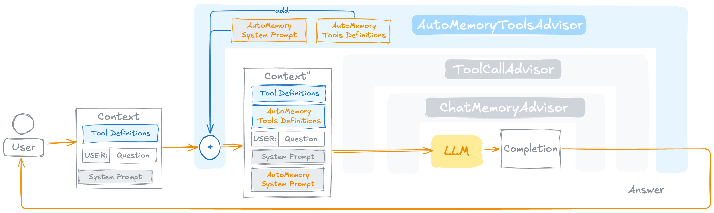

AutoAutoMemoryToolsAdvisor¶
A Spring AI ChatClient advisor that gives any agent automatic long-term memory by wiring AutoMemoryTools and its companion system prompt into the request pipeline as a single, self-contained unit.

What it does¶
On every before() call the advisor:
- Augments the system message — appends
AUTO_MEMORY_TOOLS_SYSTEM_PROMPT.md(with the configured memories root path rendered in) to whatever system message is already present. - Injects the six
AutoMemoryTools— registersMemoryView,MemoryCreate,MemoryStrReplace,MemoryInsert,MemoryDelete, andMemoryRenameinto the prompt'sToolCallingChatOptions. Existing callbacks with the same name are never duplicated. - Optionally appends a consolidation reminder — if the configurable
memoryConsolidationTriggerpredicate returnstrue, a<system-reminder>block is appended to the system message instructing the model to summarise and remove redundant memories.
If the prompt carries no ToolCallingChatOptions the request is returned unchanged — both the tool injection and the system prompt augmentation are skipped.
after() is a passthrough. Memory persistence is driven entirely by the model via tool calls during the conversation; no post-processing is needed.
Long-term memory vs. session memory¶
AutoAutoMemoryToolsAdvisor is a long-term memory mechanism. It is designed to complement, not replace, Spring AI's built-in short-term conversation memory (e.g. MessageChatMemoryAdvisor + MessageWindowChatMemory). The two layers serve fundamentally different purposes and should normally be used together:
Session memory (MessageChatMemoryAdvisor) |
Long-term memory (AutoAutoMemoryToolsAdvisor) |
|
|---|---|---|
| Scope | Current conversation only | Persists across conversations |
| Storage | In-process (ChatMemory) |
Files on disk via AutoMemoryTools |
| Content | Full message exchange — every turn | Curated facts worth keeping forever |
| Managed by | Spring AI automatically | The model itself via tool calls |
| Expires | When the process stops (or window fills) | Never — until the model deletes a file |
A typical agent setup combines both:
ChatClient chatClient = ChatClient.builder(chatModel)
.defaultAdvisors(
// Long-term memory — facts that survive across sessions
AutoAutoMemoryToolsAdvisor.builder()
.memoriesRootDirectory("/home/user/.agent/memories")
.build(),
// Short-term memory — full conversation history for this session
MessageChatMemoryAdvisor.builder(
MessageWindowChatMemory.builder().maxMessages(100).build())
.build())
.build();
In this setup the model has the best of both worlds: the full context of the current conversation via the session window, and persistent knowledge about the user and project that it accumulated over previous sessions via the memory files.
Rule of thumb: - Ephemeral details — what was said in this session, in-progress task state — belong in session memory. - Durable facts worth having next week — user preferences, project decisions, behavioural feedback — belong in long-term memory.
Quick Start¶
AutoAutoMemoryToolsAdvisor memoryAdvisor = AutoAutoMemoryToolsAdvisor.builder()
.memoriesRootDirectory("/home/user/.agent/memories")
.build();
ChatClient chatClient = ChatClient.builder(chatModel)
.defaultAdvisors(memoryAdvisor)
.build();
That's all. On the first turn the model reads MEMORY.md via MemoryView, loads relevant memory files, and writes new memories at the end of the session — all without any extra wiring.
Builder Configuration¶
AutoAutoMemoryToolsAdvisor advisor = AutoAutoMemoryToolsAdvisor.builder()
.memoriesRootDirectory("/path/to/memories") // required
.order(BaseAdvisor.HIGHEST_PRECEDENCE + 200) // optional
.memorySystemPrompt(customPromptResource) // optional
.memoryConsolidationTrigger((req, instant) -> false) // optional
.build();
| Builder method | Type | Default | Description |
|---|---|---|---|
memoriesRootDirectory(String) |
String |
— (required) | Root directory for all memory files. Created automatically if absent. |
order(int) |
int |
HIGHEST_PRECEDENCE + 200 |
Advisor order. Runs before the default ToolCallingAdvisor at +300. |
memorySystemPrompt(Resource) |
Resource |
classpath:/prompt/AUTO_MEMORY_TOOLS_SYSTEM_PROMPT.md |
Prompt template to inject. Must contain the {MEMORIES_ROOT_DIERCTORY} placeholder. |
memoryConsolidationTrigger(BiPredicate<ChatClientRequest, Instant>) |
BiPredicate |
(req, t) -> false |
Evaluated on each request. When true, a consolidation reminder is appended to the system message. |
Validation¶
memoriesRootDirectorymust be a non-empty string —build()throwsIllegalArgumentExceptionif blank.memorySystemPromptmust not be null — the builder method throws immediately if null is passed.memoryConsolidationTriggermust not be null — the builder method throws immediately if null is passed.
Memory Consolidation Trigger¶
Over time the memory store can accumulate redundant or outdated entries. The memoryConsolidationTrigger lets you inject a reminder at a chosen frequency to prompt the model to clean up:
// Trigger consolidation roughly every 20 requests (stateless approximation)
AutoAutoMemoryToolsAdvisor advisor = AutoAutoMemoryToolsAdvisor.builder()
.memoriesRootDirectory("/path/to/memories")
.memoryConsolidationTrigger((req, instant) ->
Math.random() < 0.05) // ~5 % of requests
.build();
When the predicate returns true, the following block is appended to the system message:
<system-reminder>Consolidate the long-term memory by summarizing and removing redundant information.</system-reminder>
The predicate receives:
| Parameter | Type | Description |
|---|---|---|
request |
ChatClientRequest |
The full in-flight request — inspect messages, context, or metadata to decide. |
instant |
Instant |
Wall-clock time of the current call — useful for time-based intervals. |
Common trigger strategies:
// Time-based: every 24 hours
Instant[] lastConsolidation = { Instant.now() };
.memoryConsolidationTrigger((req, now) -> {
if (Duration.between(lastConsolidation[0], now).toHours() >= 24) {
lastConsolidation[0] = now;
return true;
}
return false;
})
// Turn-count-based: every N calls
AtomicInteger counter = new AtomicInteger();
.memoryConsolidationTrigger((req, now) ->
counter.incrementAndGet() % 50 == 0)
Advisor Ordering¶
The default order BaseAdvisor.HIGHEST_PRECEDENCE + 200 places this advisor before the ToolCallingAdvisor (which sits at +300). This ordering ensures memory tools are registered in the options before the tool-calling advisor processes them.
If you use other advisors that also modify tool options (e.g. additional ToolCallingAdvisor instances), verify that their relative order does not prevent the memory tools from reaching the model.
Relation to AutoMemoryTools¶
AutoMemoryToolsAdvisor is a thin orchestration layer. The six memory operations, sandboxing logic, and file conventions all live in AutoMemoryTools. The advisor adds:
- Automatic system prompt injection (no need to configure the prompt separately on the
ChatClient) - Automatic tool registration (no need to call
.defaultTools(memoryTools)) - Duplicate-filtering guard so memory tools are never registered twice
- The optional consolidation trigger
Manual setup vs. advisor¶
If you need full control over when and how the system prompt and tools are applied, you can wire AutoMemoryTools directly without the advisor:
// Manual setup
AutoMemoryTools memoryTools = AutoMemoryTools.builder()
.memoriesDir("/path/to/memories")
.build();
String memoryPrompt = new PromptTemplate(memorySystemPromptResource)
.render(Map.of("MEMORIES_ROOT_DIERCTORY", memoriesDir));
ChatClient chatClient = ChatClient.builder(chatModel)
.defaultSystem(baseSystemPrompt + "\n\n" + memoryPrompt)
.defaultTools(memoryTools)
.build();
// Advisor setup — equivalent, less boilerplate
ChatClient chatClient = ChatClient.builder(chatModel)
.defaultAdvisors(
AutoAutoMemoryToolsAdvisor.builder()
.memoriesRootDirectory("/path/to/memories")
.build())
.build();
System Prompt¶
The default companion prompt (AUTO_MEMORY_TOOLS_SYSTEM_PROMPT.md) is bundled in the jar at classpath:/prompt/AUTO_MEMORY_TOOLS_SYSTEM_PROMPT.md. It instructs the model to:
- Read
MEMORY.mdat the start of sessions where prior context may be relevant - Use the two-step save workflow (
MemoryCreate→MemoryInsertintoMEMORY.md) - Apply the four memory types (
user,feedback,project,reference) - Verify recalled memories before acting on them
- Avoid saving ephemeral state, code patterns, git history, or fix recipes
The template contains one placeholder: {MEMORIES_ROOT_DIERCTORY} (note the spelling), which is filled with the configured memoriesRootDirectory at build() time.
To use a custom prompt, provide any Resource that contains the same placeholder:
@Value("classpath:/my-custom-memory-prompt.md")
Resource customPrompt;
AutoAutoMemoryToolsAdvisor.builder()
.memoriesRootDirectory("/path/to/memories")
.memorySystemPrompt(customPrompt)
.build();
Demo Application¶
See memory-tools-advisor-demo for a complete runnable example showing AutoAutoMemoryToolsAdvisor combined with MessageChatMemoryAdvisor and a custom logging advisor.
See Also¶
- AutoMemoryTools — the underlying tool implementations, file conventions, and security model
- FileSystemTools — general-purpose file read/write/edit (not sandboxed)
- Claude Code — Memory — the file-based memory design this library is modelled after
- Claude API SDK — Memory Tool — the official tool specification